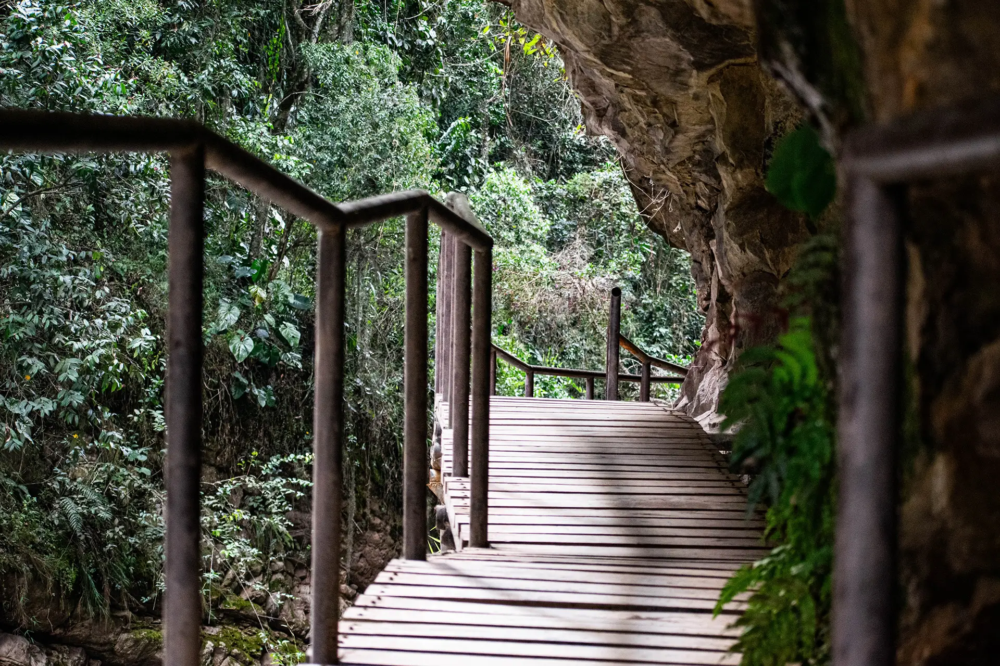
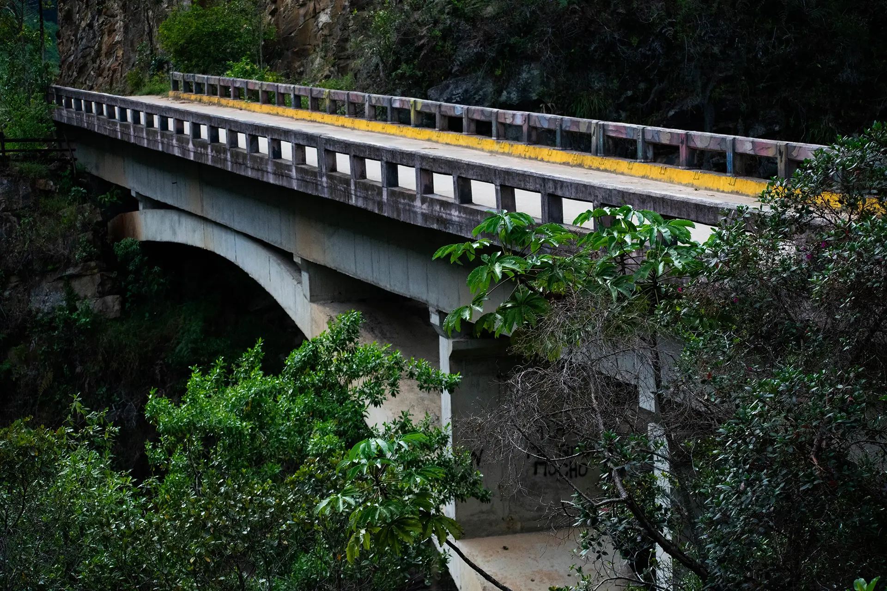
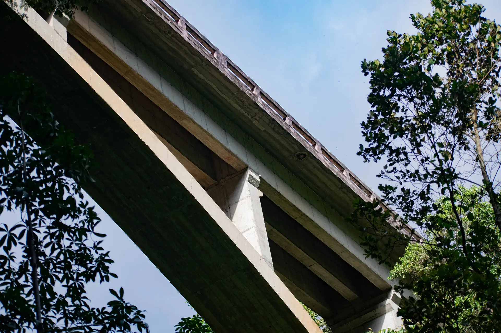
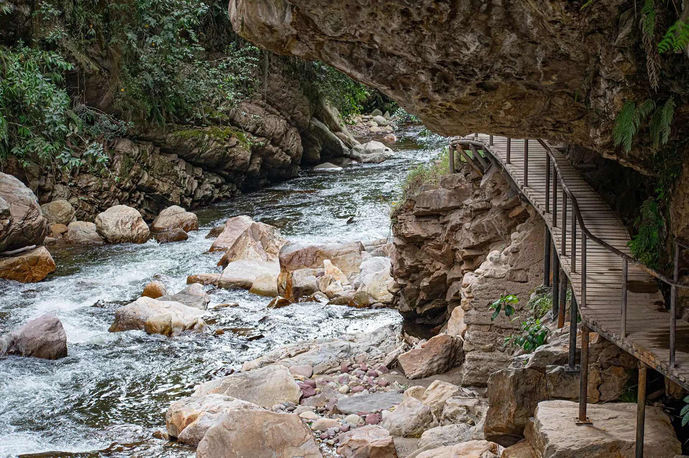
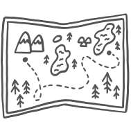
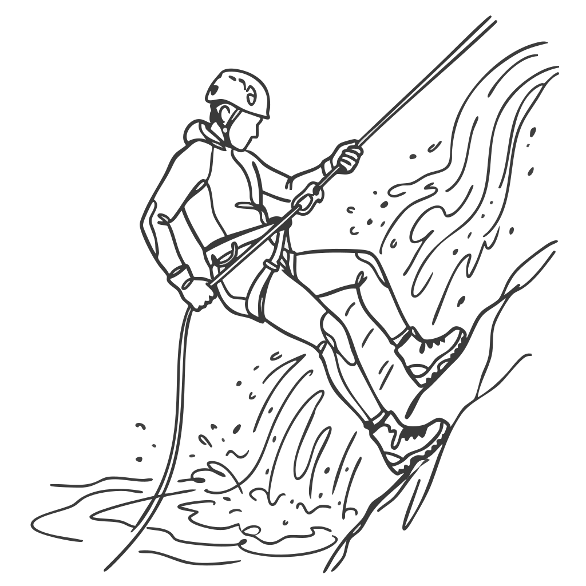
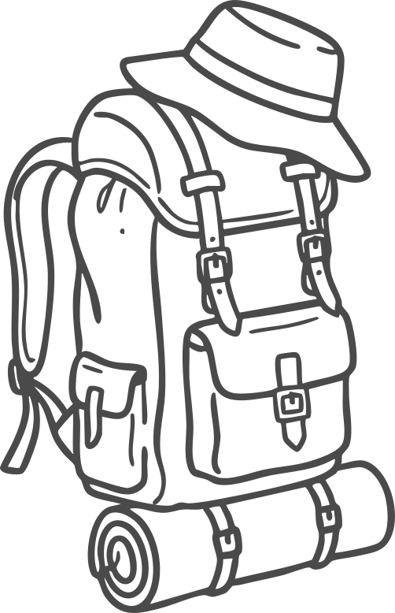
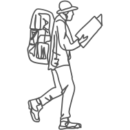
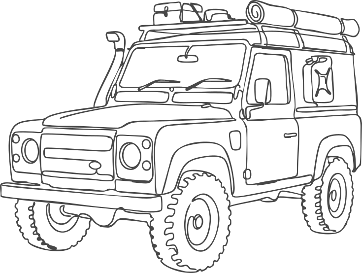
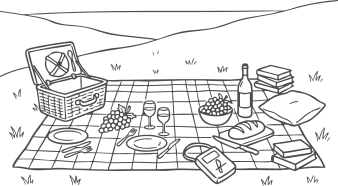

Bajo el puente de concreto que conecta dos imponentes montañas, se esconde un secreto por descubrir. Olvida el ruido del camino y desciende al corazón del cañón: un sendero de madera serpentea entre rocas gigantes y acompaña las vibrantes aguas de un río de color rojizo, creando un escenario perfecto para perderse y encontrarse en medio de lo salvaje.
Para llegar, es necesario ir en vehículo 4x4. Tras pasar por El Encino, a unos 20 minutos, el camino conduce hasta este impresionante cañón de roca. Desde allí, se accede por un sendero que baja hasta la quebrada y desemboca en un hermoso deck de madera junto al río, donde la naturaleza se muestra en toda su fuerza y belleza.

A 1.5 hora y media desde la casa en 4x4 y 1860 msnm.

Descenso de 50 metros por la pared de roca con equipo certificado y guías expertos.

Calzado de buen agarre, repelente, bloqueador solar o parasol, traje de baño y tus snacks favoritos.

Este es un ecosistema protegido. Para mantener la pureza del agua y el entorno, promovemos un turismo de mínimo impacto y el respeto total por la fauna nativa.

Acceso por vía destapada. Puedes optar por un recorrido en campero.

Un espacio natural e increíble junto a la orilla, perfecto para pasar el día y parchar.